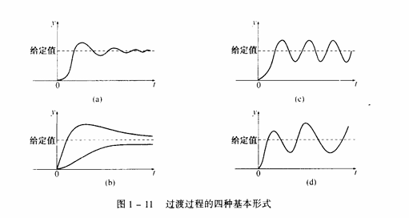
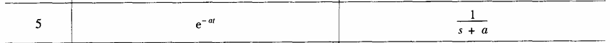
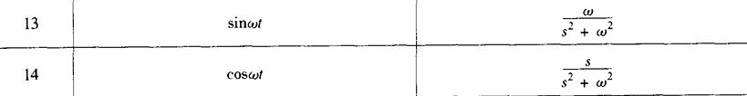

1. 绪论
- 热工过程基本术语： 变量，内扰，外扰，设备单元
- 按信号馈送方式的系统分类有哪些， 结构形式， 方框图，原理
- 开环控制 闭环控制 过渡形式 的四种基本形式
1.1 热工过程基本术语
1.1.1 常用术语：
- 被控对象： 被控制的生产过程称为被控对象
- 被调量（被控参数）： 表征生产过程是否符合规定情况的物理量称为被调量或者被控参数
- 给定值： 希望被调量维持的数值称为给定值
在很多情况下，给定值是不变的， 但有些情况下给定值是按一定要求变化的
- 扰动： 引起被调量变化的各种原因都称为扰动
- 控制量（或调节量）：由控制（调节） 作用改变去控制被调量变化的物理量称为控制量（调节量）
- 控制机构（调节机关）： 接受控制（调节）作用去改变控制量（调节量）的设备称为控制（调节）机构
1.1.2 设备单元
- 测量单元：用来测定被调量，并把被调量转换为与之成比例（或其它函数关系）的某种便于传输和综合的信号
- 给定单元：用来设定被调量的给定值，发出与测量信号同一类型的给定值信号
- 调节单元：接受被调量信号和给定制信号比较后的偏差信号，发出一定规律的调节指令给执行器
- 执行器：根据调节单元送来的调节指令去推动调节机构，改变调节量
1.2 按信号馈送方式的系统分类有哪些， 结构形式， 方框图，原理
1.2.1 分类
反馈控制系统
- 被控量对控制系统有影响
- 闭环控制 信息传输构成了一个闭合回路
- 优点： 稳定性好，精度高，抗扰动能力强
- 缺点： 控制不即时
前馈控制（开环控制）系统
- 直接根据扰动决定控制效果，信息传输没有构成闭合回路
- 开环控制 信息传输是单向的，被控量对控制没有影响的系统，信息传输没有构成闭合回路
- 优点： 构造简单，容易维护，成本低，无稳定性问题
- 缺点：
- 稳定性差，抗扰动能力差
- 未知扰动出现时，便不能完成既定任务
前馈-反馈控制系统
1.2.2 控制系统的方框图
- 相加点符号：
两个信号的代数相加，且有相同量纲
- 分支点符号：
一个信号分成两个信号，送到两个地方
1.2.3 过渡过程基本形式
过渡过程： 当有扰动作用于控制系统时，控制系统的被调量发生变化，通过系统工作达到了新的平衡状态的过程
扰动使用单位阶跃函数
- 衰减震荡过程
- 非周期过程
- 等幅振荡
- 扩大震荡过程

2， 线性自动控制系统的数学描述
- 动态模型的三种描述形式 以电路和水箱系统为例
- laplace变换 以及某些规则（线性，实平移，微分，积分，初值终值定理
- 传递函数的定义，性质，以及如何求解，利用反变换求阶跃输入下的输出响应 P45 1-6行
- 求阶跃响应稳态值（条件 极点位于左半平面）
- 一阶惯性环节 一阶实际微分环节，微分方程传递函数， 电路例子 2-25，2-28
- 框图变换或梅森公式求传递函数 讲例2-10 作业2-4 2-5（1） 2-6
2.1 模型的描述形式
2.1.1. 系统的输出-输入描述
- 不考虑系统内部的状态x， 只建立输入u和输出y之间的关系
- 只涉及系统的端部特性，不涉及系统的内部特性
2.1.2 系统的输入-状态-输出描述
- 即为状态空间描述
- 考虑系统的状态x， 系统的输入u， 系统的输出y之间的关系
- 不但涉及系统的端部特性，还涉及系统的内部特性，是系统特性的完整表达
2.2 laplace变换



L{f(t)}
表示函数f(t)的laplace变换
2.2.1 定义
L{f(t)}=F(s)=∫0∞e−stf(t)dt
2.2.2 运算规则
- 线性性质： L{af(t)+bg(t)}=aL{f(t)}+bL{g(t)}
- 实平移性质： L{f(t−t0)}=e−st0L{f(t)}
- 复平移性质： L{eatf(t)}=F(s−a)
- 微分性质： L{f′(t)}=sF(s)−f(0)
- 积分准则（零初始条件）： L{∫0tf(τ)dτ}=s1F(s)
L{∫0t∫0tf(τ)dτ}=s21F(s)
- 初值定理： limt→0f(t)=lims→∞sF(s)
- 终值定理： limt→∞f(t)=lims→0sF(s)
终值定理表示了f(τ)的稳态值和sF(s)在零点附近状态值之间的关系，仅当limt→∞sF(s)存在时，终值定理才成立
初值和终值定理使用注意
- 如果sF(s)的所有极点位于左半s平面， 则limt→∞f(t) 存在
- 如果sF(s)有极点位于虚轴上， 则limt→∞f(t) 不存在， f(t) 包含震荡的或按指数规律增长的时间函数 、
如果f(t) 是正弦函数 sin(ωt), 将有位于虚轴上的极点，极限不存在
2.3 传递函数
2.3.1 定义
- 在零值初始条件下，系统的输出响应与输入信号的laplace变换之比
G(s)=U(s)Y(s) = L{u(t)}L{y(t)}
2.3.2 性质
- 线性定常系统；
- 复频域下的数学模型，表征系统动态特性
- 系统本身属性，与输入信号无关
- SISO系统，表达输入输出两个变量之间的联系。但不提供任何有关物理结构的信息、
- 特征方程，零点，极点
2.3.3 零点和极点
- 传递函数的分母为关于s的n次多项式：G(s)=ansn+an−1sn−1+⋯+a1s+a0bmsm+bm−1sm−1+⋯+b1s+b0
- 特征多项式：Φ(s)=ansn+an−1sn−1+⋯+a1s+a0， 特征多项式的根称为传递函数的极点
- 传递函数的零点： 使得传递函数的分子bmsm+bm−1sm−1+⋯+b1s+b0为0的s值，称为传递函数的零点
- 分子的阶次不高于分母的阶次的传递函数称为 正则传递函数
2.3.4 求解传递函数
解析法
- 写出系统的微分方程
- 假设初始条件为0， 对微分方程进行laplace变换
- 求输出量Y(s)和输入量U(s)的关系
2.3.5 阶跃输入下的输出响应
- 阶跃输入：1(t)=1
单位阶跃函数的laplace变换为L{1(t)}=s1
所以输出响应为y(t)=L−1[s1G(s)]=h(t)
2.3.6 阶跃响应的稳态值
稳态值： limt→∞y(t)=lims→0sG(s)
2.4 基本环节和环节的连接方式
2.4.1 基本环节
-
比例环节
传递函数为 G(s)=k=U(s)Y(s)

-
积分环节
传递函数为 G(s)=Tas1
Ta 为积分环节的积分时间


-
微分环节
传递函数为 G(s)=Tds
Td 为微分环节的微分时间

2.4.2 环节的连接方式
- 串联连接
总的传递函数等于各个环节传递函数的乘积
G(s)=G1(s)G2(s)⋯Gn(s)
- 并联连接
总的传递函数等于各个环节传递函数的代数和
G(s)=G1(s)+G2(s)+⋯+Gn(s)
- 反馈连接
- 负反馈： 当输入信号u与反馈信号uf相减时称为负反馈
此时传递函数为G(s)=1+G1(s)G2(s)G1(s)
- 正反馈： 当输入信号u与反馈信号uf相加时称为正反馈
此时传递函数为G(s)=1−G1(s)G2(s)G1(s)
2.4.3 常见环节
2.4.3.1. 一阶惯性环节
传递函数为G(s)=TCs+1k
阶跃响应函数为y(t)=ku0(1−e−TCt)
k:惯性环节的传递系数或称稳态放大系数，即当系统从一个稳态变换到另一个稳态时，输出量的变化量与输入量的变化量之比

此时的G(s)=RCs+11
2.4.3.2 一阶实际微分环节

2.5 框图变换与简单物理系统传递函数推导
2.5.1 框图变换关系

2.5.2 梅森公式


3. 热工对象和自动调节器的动态特性
1.内部扰动，外部扰动
2. 热工对象的动态特性和特点：有，无自平衡能力的对象的传递函数，图像。参数 n,T0,Ta的含义
3. 比例 积分 微分 三种基本作用
4. 两种PID表达形式，3-69，3-70，标准式和工程整定式
3.1 内部扰动，外部扰动

3.2 有自平衡能力的热工对象
3.2.1 自平衡系数
TEMP
- 3.2.1
- 3.2.2
G(s)=Tas+11
λ